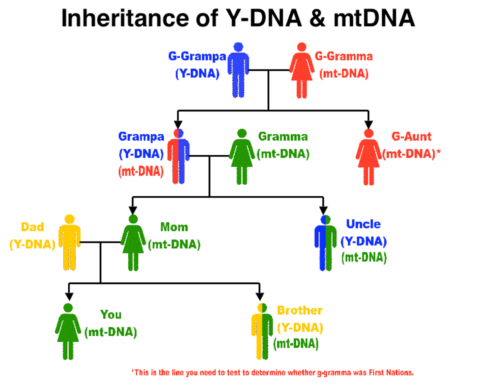

The Enigma of Genetic Adam and Eve
Understanding Genetic Adam and Eve takes us on a journey through human evolution, diverse genes, and the quest to learn about the origin of humanity. In this article, we will explore the mystery of Genetic Adam and Eve, explaining the science behind these ideas and the interesting insights they provide into our ancient history.
Genetic Adam and Eve are not names of real individuals who once walked the Earth. Instead, they are terms used in genetics and anthropology to represent the most recent common ancestors of all modern humans.
Mitochondrial Eve (mtDNA)
Mitochondrial Eve is the hypothetical common ancestor through the matrilineal line, meaning she is the woman from whom all humans today can trace their mitochondrial DNA (mtDNA). Mitochondria are tiny structures within our cells that carry their own DNA. The unique feature of mtDNA is that it is passed exclusively from mother to offspring, making it an ideal tool for tracing maternal ancestry.
Mitochondrial Eve is estimated to have lived in Africa around 100,000 to 200,000 years ago. While she wasn’t the only woman alive at her time, her genetic lineage is the only one that has survived to the present day, making her our most recent common maternal ancestor.
Y-Chromosomal Adam (Y-DNA)
Y-Chromosomal Adam, on the other hand, represents the most recent common paternal ancestor of all modern humans. The Y-chromosome is passed exclusively from father to son, making it an excellent marker for tracing paternal lineage.
Like Mitochondrial Eve, Y-Chromosomal Adam wasn’t the only man alive during his time. He also lived in Africa around 100,000 to 200,000 years ago. His Y-chromosome lineage is the only one to have persisted through the generations, making him the common paternal ancestor for all males in our species.
 Inheritance of Y-DNA and mt-DNA between generations
The “Out of Africa” Theory
According to the “Out of Africa” theory, our species, Homo sapiens, emerged in Africa approximately 200,000 years ago. This emergence is marked by a key event in our evolutionary history known as anatomically modern Homo sapiens. These early modern humans possessed the physical traits and cognitive abilities that are characteristic of modern humans today.
From their African homeland, these early Homo sapiens began to disperse and migrate to other continents. The migration out of Africa is believed to have occurred in multiple waves, with the first significant exodus happening around 70,000 to 100,000 years ago.
One of the most compelling pieces of evidence supporting this theory is the genetic diversity seen in human populations around the world. As humans migrated to different regions, they adapted to their new environments, resulting in the development of distinct physical traits and genetic markers in different populations. However, despite these regional adaptations, all humans share a common genetic heritage that can be traced back to their African ancestors.
The presence of Genetic Adam and Eve in Africa aligns with the “Out of Africa” theory. Both Mitochondrial Eve and Y-Chromosomal Adam are estimated to have lived on the African continent during the same time period when early modern humans were spreading across the continent and eventually beyond.